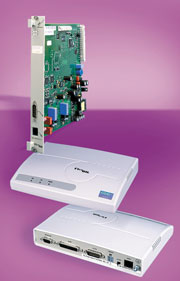
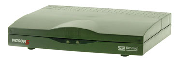
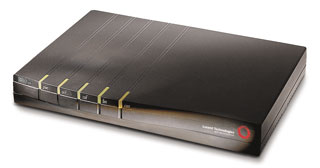

Ростислав Сергеев
В феврале 2003 г. исполнилось два года с момента ратификации Международным союзом электросвязи (МСЭ) нового стандарта для симметричных DSL-устройств, получившего обозначение G.921.2 или G.shdsl. С тех пор на отечественном рынке появился относительно широкий выбор SHDSL-оборудования, в списке поставщиков значатся многие производители систем для организации цифровых абонентских линий (DSL). Тем не менее в структуре продаж российских дистрибьюторов доля этой продукции пока незначительна. Так, по оценке Рафаэля Шамиева, начальника отдела компании Race Communications (http://www.race.ru), использующей в своих проектах соответствующие решения четырех производителей (см. таблицу), объем SHDSL-оборудования в общих поставках DSL-модемов компании в 2002 г. составил 10%. У большинства других российских интеграторов данный показатель еще ниже. Отчасти это объясняется тем, что фактически продажи оборудования стандарта G.921.2 начались только в прошлом году (см. "SHDSL: заминка на старте", "BYTE/Россия" No 10'2001). Например, один из крупнейших российских партнеров Lucent Technologies, компания "Классика" (http://www.classics.ru), только в конце 2002 г. приступила к широким поставкам SHDSL-аппаратуры американского производителя. Директор департамента сетей и телекоммуникаций "Классики" Максим Акинин отмечает, что задержка была связана с необходимостью сертификации нового оборудования, а также с тем, что SDSL-устройства до сих пор пользуются спросом. Однако несомненные преимущества технологии SHDSL служат гарантией того, что в ближайшее время соотношение объемов продаж различных версий симметричных DSL-систем будет меняться в пользу нового стандарта.
Устройства, соответствующие спецификациям G.shdsl, обеспечивают симметричную передачу данных в обоих направлениях на скоростях от 192 кбит/с до 2,3 Мбит/с. При этом, по утверждению разработчиков стандарта, SHDSL-модемы в одинаковых условиях работы превосходят по быстродействию своих SDSL-"предков" на 35-45%. Предусматривается также возможность их применения в двухпарных включениях. В таких случаях можно повысить максимальную скорость до 4,6 Мбит/с или примерно на 25% увеличить протяженность линии. Благодаря применению 16-уровневого линейного кода TC-PAM сигнал G.shdsl при любой скорости передачи занимает более узкую полосу частот, чем сигналы с модуляцией 2B1Q или CAP. Поэтому дальность связи возрастает в первом случае на 15-30%, а во втором - примерно на 10%.
Модемы с модуляцией TC-PAM показывают при стечении определенных факторов поистине фантастическую "дальнобойность". Компания CompTek (http://www.comptek.ru) опубликовала в конце прошлого года результаты испытаний SHDSL-модемов серий 1421 и 1420 производства Telindus, проведенных на магистральной линии связи между городами Киров и Кирово-Чепецк (Кировская область). В ходе тестирования SHDSL-оборудование бельгийского производителя обеспечило передачу потока 256 кбит/с на расстояние 41 км. Линия была построена без использования НУПов (неуправляемых усилительных пунктов регенерации трафика) на магистральном кабеле ТЗБ 3х4х1,4 (диаметр жилы 1,4 мм). Испытания проводились при 90%-ной загрузке канала ICMP-пакетами размером 1,4 Кбайт. Статистика снималась с удаленного модема по протоколу SNMP через telnet-сессию. По данным CompTek, полученные значения скорости были зафиксированы с первого раза без переустановки связи (retrain), что характеризует соединение как весьма устойчивое. Коэффициент ошибок BER=2х10-7.
Стандарт G.shdsl допускает применение регенераторов, в результате чего дальность действия всей системы возрастает в несколько раз. Однако ассортимент таких устройств на российском рынке довольно скуден. Лишь отечественная фирма НТЦ "Натекс" (http://www.nateks.ru) активно рекламирует собственные SHDSL-регенераторы семейства FlexDSL. Дело, вероятно, в том, что зарубежные поставщики видят основное применение данной технологии не на магистралях большой протяженности, а в сетях абонентского доступа.
Каналообразующее оборудование
Как и любая симметричная DSL-технология, G.shdsl ориентирована прежде всего на корпоративный сектор. При этом SHDSL-оборудование (модемы, мосты и маршрутизаторы) используется в основном в конфигурации "точка-точка", когда два устройства связаны между собой одной или двумя медными парами.
Большинство SHDSL-устройств имеют интерфейс Ethernet 10/100 Base-T для соединения с локальной сетью, однако нередко такие устройства оснащаются портами G.703 для передачи цифровых потоков Е1. В последнем случае оборудование задействуется для подключения УАТС или базовых станций сотовой связи к транспортным сетям. Некоторые модели SHDSL-модемов поставляются со встроенным концентратором, обеспечивающим непосредственное подключение рабочих станций. Стоит также заметить, что почти во всех моделях SHDSL-модемов реализованы функции моста или маршрутизатора. SHDSL-маршрутизаторы нередко обладают встроенным межсетевым экраном и поддержкой виртуальных частных сетей (VPN).
Сегодня оборудование, использующее линейное кодирование TC-PAM, выпускают не только крупные игроки на рынке DSL-аппаратуры, но и небольшие компании. Нередко такое оборудование поддерживает не все описанные в стандарте G.shdsl функции или реализует их с применением упрощенных алгоритмов, поэтому стоит оно весьма недорого. Естественно, что в России на такие модемы существует спрос, главным образом для приложений типа "точка-точка". Более дорогое оборудование отличается, как правило, расширенными сервисными функциями, например, возможностью удаленной загрузки ПО или дистанционного управления.
На отечественном рынке оконечные устройства стандарта G.shdsl предлагают многие западные производители. Однако пионером в этой области оказалась российская компания НТЦ "Натекс". На сегодняшний день в ее продуктовой линейке насчитывается уже четыре семейства SHDSL-модемов, которые фирма через своего швейцарского партнера FlexDSL Telecommunications поставляет и за рубеж.
Модемы FlexDSL PAM компании "Натекс", базирующиеся на БИС Orion фирмы GlobeSpan, способны передавать данные с линейной скоростью до 2056 кбит/с по одной или двум медным парам. Устройства оснащаются пользовательскими интерфейсами G.703, V.35, V.36, X.21, Ethernet 10/100 Base-T. Модемы с интерфейсом Ethernet имеют встроенный концентратор на четыре порта и поддерживают функции моста и IP-маршрутизации. Конструктивное исполнение FlexDSL PAM самое различное. Имеются платы для установки в шасси, автономные устройства настольного типа и в корпусе mini-rack для монтажа в 19-дюймовую стойку.
|  | Модем FlexDSL производства компании "Натекс".
|
Серия FlexDSL Discovery, также выпускаемая НТЦ "Натекс", ориентирована преимущественно на поставщиков выделенных каналов для доступа в Интернет. Вместе с тем модемы данного семейства поддерживают технологию VLAN (протокол IEEE 802.1q), что позволяет применять их для соединения территориально разнесенных Ethernet-коммутаторов. Самым последним представителем FlexDSL Discovery стала "облегченная" версия, выпускаемая пока только в настольном исполнении. Новосибирский дистрибьютор "Натекс" компания "Ротек-Новосибирск" (http://www.telecomsite.ru) предлагает такое устройство за 398 долл. (все цены приведены с учетом НДС), т. е. дешевле всех других SHDSL-модемов российского производителя. Данная модель оснащена портом Ethernet 10/100 Base-T и обеспечивает передачу симметричного потока 2,3 Мбит/с на расстояние до 5 км по медному кабелю с диаметром жилы 0,5 мм.
Следует заметить, что "Натекс" - это также один из немногих производителей, поставляющих на рынок интегрированные устройства доступа (IAD) стандарта SHDSL. Оборудование FlexDSL IAD в отличие от большинства VoDSL-устройств других производителей не требует наличия на узле оператора мультиплексоров (DSLAM) или концентраторов DSL-линий. Оно не требует и наличия у операторов транспортных сетей IP или ATM, а также установленных в них медиа-шлюзов, обеспечивающих выход в ТфОП. Решение "Натекc" предполагает установку в здании АТС линейного модема (LTU) FlexDSL IAD, которое подключается к АТС по интерфейсу E1 и общается с ней посредством сигнализации CAS. Кроме того, голос может доставляться на АТС по аналоговым интерфейсам FXO, а данные на устройство доступа в сеть передачи данных - по универсальному последовательному интерфейсу (V.35/V.36/X.21). Абонентский модем (NTU) оснащается одной или двумя голосовыми платами (4/8 портов FXO/FXS) и универсальным последовательным интерфейсом (V.35/V.36/X.212). При наличии у пользователя цифровой АТС он может заказать NTU с интерфейсом E1 (G.703/G.704).
FlexDSL IAD может найти применение и в целях уплотнения телефонной абонентской линии. Другими словами, с его помощью по одной абонентской линии обеспечивается работа четырех или восьми абонентских телефонов. Можно отметить, что стоимость FlexDSL IAD у региональных дистрибьюторов "Натекс" составляет в зависимости от конфигурации от 800 до 1000 долл., 4-портовой телефонной платы FXS или FXO - от 200 до 300 долл.
Многие российские системные интеграторы широко применяют в своих проектах симметричное оборудование фирмы ADC (http://www.adc.com) (прежде это оборудование выпускалось компанией PairGain, которую ADC купила несколько лет назад). Первым устройством данного производителя с поддержкой G.shdsl стал модем Megabit Modem 701G (MM701G), который появился на нашем рынке еще в конце 2001 г. MM701G оснащен пользовательским интерфейсом Ethernet 10Base-T и может работать в режиме моста или маршрутизатора. Существует возможность организации до 32 отдельных (PPP over ATM) соединений одновременно, в том числе с разными Интернет-провайдерами. Поддерживается широкий спектр протоколов межсетевых соединений, включая NAPT (Network and Port Address Translation), DNS и DHCP. Благодаря Web-интерфейсу Easy Session облегчаются сложные задачи установки и настройки устройства, в частности, его конфигурирования в IP-сетях.
С июня прошлого года на российском рынке появились встраиваемые SHDSL-устройства ADC семейства WorldDSL G, устанавливаемые в малогабаритные корпуса и 19-дюймовые шасси, единые для всего семейства WorldDSL. В настоящее время доступны три модели модемов в различных вариантах исполнения. Устройство ETU-911 оснащено пользовательским интерфейсом G.703/G.704, ETU-912 - программируемым интерфейсом V.35/V.36/X.21, а ETU-914 - и тем и другим. Последняя модель способна мультиплексировать трафик с обоих интерфейсов. Поскольку стандарт G.SHDSL допускает передачу данных со скоростью до 2,3 Мбит/с, с помощью ETU-914 можно передать полный 2 Мбит/с поток E1 или PRI с интерфейса G.703 и дополнительно поток 300 кбит/с с интерфейса V.35.
В ближайшее время ADC начнет продажи еще одной SHDSL-модели - MM 702G. Она будет работать по четырехпроводной линии, обеспечивая скорость передачи до 4,6 Мбит/с. Кроме того, планируется выпустить SHDSL-версию хорошо зарекомендовавшего себя в России модема ММ 300.
DSL-системы Watson, разработанные и выпускаемые швейцарской фирмой Schmid Telecom (http://www.schmidtelecom.com), хорошо известны в России. Модель Watson 5, по утверждению директора фирмы Schmid Telecom Russia & CIS Владимира Угрюмова, полностью отвечает всем требованиям G.SHDSL (можно отметить, что специалисты Schmid Telecom принимали активное участие в разработке спецификаций данного стандарта). В то же время специалисты Race Communications отмечали, что в ходе испытаний первых образцов данной системы не удавалось установить соединение с SHDSL-модемами других производителей.
Watson 5 работает не только по одной медной паре, но также по двум и по четырем. За счет наращивания числа медных пар можно увеличить длину линии связи. Стоит отметить, что серийных поставок 8-проводной системы не приходится ожидать до середины 2003 г. После ее появления Watson 5 станет самым "широкополосным" SHDSL-решением, обеспечивающим работу на скоростях до 9,2 Мбит/с. По словам г-на Угрюмова, в кабеле, где по другим жилам (0,4 мм) передаются самые разнообразные сигналы, при максимальной скорости 2,3 Мбит/с Watson 5 обеспечит работу по одной паре на дальности 3 км, по двум - на 4 км, четырем - на 4,9 км.
|  | SHDSL-маршрутизатор Watson 5 компании Schmid Telekom.
|
Оборудование Watson 5 имеет пользовательские интерфейсы E1, Ethernet 10Base-T и V.35/V.36/X.21 (nx64 кбит/с). Сеть, построенная на xDSL-платформе семейства Watson, управляется системой дистанционного управления с графическим пользовательским интерфейсом Watson Element Manager, которая, по данным разработчика, позволяет просто и доступно конфигурировать, администрировать и контролировать оборудование Watson.
Американская фирма Lucent Technologies (http://www.lucent.ru) предлагает российским заказчикам две модели SHDSL-маршрутизаторов CellPipe 20Н и 50H. Обе обладают встроенным 4-портовым концентратором и работают по одной медной паре на скоростях до 2,3 Мбит/с. CellPipe 20Н отличается невысокой стоимостью: так, компания "Классика" предлагает их по цене около 300 долл. Более "продвинутая" модель 50H поддерживает технологию HDSL2, однако имеется возможность программной модернизации устройства до G.shdsl. Обеспечивается скорость приема и передачи до 1,544 Мбит/с. CellPipe 50H позволяет строить VPN на базе протокола IPSec. Для защиты от несанкционированного доступа в устройство "вшит" межсетевой экран SecureConnect. Предусмотрена поддержка сетевой системы управления Navis.
|  | SHDSL-маршрутизатор CellPipe производства Lucent Technologies.
|
Помимо перечисленных устройств на российском рынке присутствует SHDSL-продукция и других компаний. Среди них представлены как гиганты сетевой индустрии - Alcatel (http://www.alcatel.ru), Cisco (http://www.cisco.ru) и Siemens (http://www.siemens.ru), так и менее крупные производители - RAD (http://www.rad.ru), Telindus (http://www.teleindus.com), ZyXEL (http://www.zyxel.ru), Patton Electronics (http://www.patton.com), CTC Union (http://www.ctcu.com) и некоторые другие. В список российских производителей, помимо НТЦ "Натекс", входят NSG (http://www.nsg.ru) и "Альфа-Телекс" (http://alfatelex.ru), в ближайшее время к ним прибавится новосибирская фирма "Гранч" (http://www.granch.ru).
Каналообразующее SHDSL-оборудование
| Производитель | Поставщик | Модель | Тип устройства | Пользоват. интерфейсы | Макс. дальность действия*, км | Дополнит. возможности | Цена**, долл. |
| ADC | Race Communications | MM701G | Маршрути-затор | 10Base-T | 5,7 | 647 | |
| ADC | Race Communications | ETU-911/12/14 | Маршрути-затор | G.703, V.35, G.703+V.35 | 5,7 | Мультипле-ксирование трафика с портов G.703 и V.35 | 675 (ИП 220 В, порты G.703 и V.35) |
| ADC | Race Communications | UTU-911/12/14 | Модемная плата | G.703, V.35, G.703+V.35 | 5,7 | Мультипле-ксирование трафика с портов G.703 и V.35 | 650 (порты G.703 и V.35) |
| CTC Union Technologies | Step Logic | SHDTU03-ET10R | Маршрути-затор | 10/100 Base-T | 3 | SNMP-управление; консольный порт | 320 |
| Lucent Technologies | Классика CIS | CellPipe 20H | Маршрути-затор | 10/100 Base-T | 5 | NAT, 4-портовый Ethernet-концентратор | 299 |
| Lucent Technologies | Классика CIS | CellPipe 50H | Маршрути-затор | 10/100 Base-T | 5 | HDSL2, NAT, VPN, межсетевой экран, 4-портовый Ethernet-концентратор | 899 |
| Patton Electronics | Race Communications | 3201/I | Мост | 10/100 Base-T | 5,6 | 599 (ИП 220 В) | |
| Patton Electronics | Race Communications | 3201/R | Маршрути-затор | 10/100 Base-T | 5,6 | 649 (ИП 220 В) | |
| Schmid Telecom | Race Communications | Watson 5, single pair | Маршрути-затор | V.35, G.703, G.703+V.35 | 5,7 | Мультипле-ксирование трафика с портов G.703 и V.35 | 995 (порты G.703 и V.35) |
| Schmid Telecom | Race Communications | Watson 5, single pair | Модемная плата | 2 х V.35, 2 х G.703, G.703+V.35 | 5,7 | Мультипле-ксирование трафика с портов G.703 и V.35 | 1109 (порты G.703 и V.35) |
| Telindus | CompTek | 1421 | Маршрути-затор | Ethernet 10/100 Base-T | 5 | 354 | |
| »Натекс» | Race Communications | FlexDSL Orion | Модем | G.703, V.35, V.36, X.21 | 5 | Кросс-коннектор, работа по одной или двум парам. Имеется регенератор | 765 (ИП 220 В, порты G.703 и V.35, кабель DSL) |
| «Натекс» | «Ротек-Новосибирск» | FlexDSL IAD | Интегриро-ванное устройство доступа | G.703, V.35, V.36, X.21, до 8 FXO/FXS | 5 | Кросс-коннектор, работа по одной или двум парам. Имеется регенератор | 965 (ИП 220 В, порты G.703 и V.35, кабель DSL и V.35 DTE, без голосовых интерфейсов) |
| «Натекс» | «Ротек-Новосибирск» | FlexDSL PAM | Маршрути-затор | 10/100 Base-T | 5 | Статическая, динамическая (RIP) маршрутизация, поддержка VLAN, 4 портовый Ethernet-концентратор | 471 (ИП 220 В, кабель DSL) |
| «Натекс» | «Ротек-Новосибирск» | FlexDSL Discovery | Мост | Ethernet - 10/100 Base-T | 5 | Поддержка VLAN, технология Ethernet over DSL | 398 (ИП 220 В) |
|
Примечание: данные предоставлены поставщиками.
* Для максимальной скорости передачи 2,3 Мбит/с по одной паре проводов, диаметр жилы 0,5 мм. ** Розничная цена с НДС при поставке из города, где находится центральный офис поставщика. |
|||||||
SHDSL-регенераторы
Как уже упоминалось, российский рынок SHDSL-устройств не отличается большим ассортиментом усилительных устройств (регенераторов или репитеров). Однако в некоторых случаях такие устройства могут оказаться единственным решением для организации протяженного SHDSL-тракта. Например, у оператора могут возникнуть задачи, связанные с обслуживанием объектов, которые находятся на значительном удалении от узла концентрации трафика. SHDSL-регенераторы семейства FlexDSL производства "Натекс" позволяют удвоить длину линии SHDSL, при этом существует возможность установки дополнительной платы DSL-модема, благодаря которой можно "отвести" голосовой трафик и/или трафик данных на расстояние 5-10 км от магистральной линии. Питание к регенераторам может подводиться локально или дистанционно по линии передачи данных. Последним способом можно запитывать до двух усилительных устройств.
По заказу опция ввода-вывода может быть реализована с асинхронными или синхронными N*64-интерфейсами, например, для организации систем управления и технологической связи вдоль трубопроводов, железнодорожных линий, автострад, речных путей сообщения и т. д. Используя функцию подключения внешних датчиков сигнализации, оператор может собрать информацию об авариях на тракте (в точках установки регенераторов), таких, как вскрытие, затопление, пожар и т. д.
SHDSL-регенераторы поставляются в защищенных корпусах для эксплуатации в экстремальных условиях или в стандартных пластмассовых корпусах для установки в помещениях. В зависимости от вариантов исполнения цена на данные устройства может варьироваться от 786 до 2222 долл. (данные "Ротек-Новосибирск").
Мультиплексоры и концентраторы
Как уже упоминалось, оборудование G.shdsl нашло пока применение в основном для организации каналов "точка-точка". Тем не менее уже целый ряд российских операторов установили мультиплексоры доступа (DSLAM), которые поддерживают различные версии DSL, включая и SHDSL. В частности, весной прошлого года компания "Сеть цифровых каналов" (дочернее предприятие "Екатеринбургской телефонной сети") установила в своей городской ADSL-сети несколько DSLAM Cisco 6260, поддерживающих подключение пользователей и по технологии SHDSL. Партнер СЦК фирма "Корус ИСП" (в Екатеринбурге непосредственным подключением абонентов занимаются сторонние организации, являющиеся, как правило, самостоятельными Интернет-провайдерами) установила на услуги ADSL и SHDSL полностью идентичные тарифы. Так, организация выделенного канала от абонентской точки до АТС обойдется заказчику в 785 долл., а при уже имеющейся абонентской линии - в 500 долл. Ежемесячная абонентская плата составляет 130 долл.
Однако прошедшее с момента появления первого операторского оборудования G.shdsl время показало, что в ближайшие годы в России все же не стоит ожидать широкого применения этой технологии в сетях доступа. Некоторые российские операторы (например, "Перминформ") для организации выделенных каналов используют устройства только асимметричного стандарта ADSL, другие ("МТУ-Интел") закупили вместе с ADSL лишь ничтожное число плат SDSL.
Тем не менее ведущие производители DSLAM активно выводят на рынок решения на базе SHDSL. Например, компания Lucent первоначально выпускала для DSLAM Stinger интерфейсные модули американского стандарта HDSL2 (скорость передачи до 1,544 Мбит/с). Затем появилось ПО, обеспечивающее поддержку этими платами G.shdsl. Сейчас американская фирма выпускает 48- и 72-портовые модули G.shdsl.
В прошлом году Lucent представила систему Stinger FS+. Новое шасси поддерживает до 1008 абонентских DSL-портов (SHDSL или ADSL). В стандартную стойку можно установить три таких шасси, что дает более 3 тыс. DSL-портов. Естественно, что стоимость столь мощной платформы доступа получается ниже (из расчета на порт), чем у менее емких систем. К последним можно отнести DSLAM Stinger LS. Учитывая то, что все мультиплексоры Lucent оснащены встроенным АТМ-коммутатором, никакого дополнительного оборудования для их объединения при развертывании сети широкополосного абонентского доступа не требуется. Устройство Stinger LS вполне привлекательно по стоимости: так, компания "Классика" поставляет систему начальной конфигурации по цене 26 тыс. долл. (без учета налогов). В нее входят 48-портовая плата G.shdsl и модуль OC3-STM-1 ATM для подключения DSLAM к транспортной сети. Естественно, что помимо G.shdsl оборудование Stinger поддерживает и другие версии цифровых абонентских линий - ADSL, VDSL, IDSL и SDSL.
Компания Alcatel (http://www.alcatel.ru) поставляет SHDSL-модули для своей широко известной платформы ASAM 7300, аналогичной системы с интегрированным АТМ-коммутатором ASAM 7350 и мультисервисного устройства доступа Litespan-1540. В филиалах семи межрегиональных компаний особой популярностью пользуются мультиплексоры DSL-доступа Cisco 6260. Хотя предприятия электросвязи используют их в основном для предоставления ADSL-сервиса, все порты этого устройства можно программно настроить на поддержку SHDSL. Есть подобное решение и у Siemens ICN. Прежде DSLAM этого производителя использовал лишь петербургский провайдер "Вэб Плас", однако в конце января 2003 г. было объявлено о поставке DSLAM XpressLink для филиала "Самара Телеком" межрегиональной компании связи "ВолгаТелеком".
Цены
На первом этапе SHDSL-оборудование оказалось несколько дороже, чем обещали разработчики стандарта и производители наборов микросхем. Однако в последнее время стоимость аппаратуры G.shdsl снижается. Так, по данным "Ротек-Новосибирск", компания Schmid Telecommunications с 1 января 2003 г. снизила на 10% цены на все модемы Watson (исключение составляют лишь модели Watson 5 с интерфейсом Ethernet, для которых снижение составило 8%). Российский дистрибьютор тайваньской фирмы CTC Union компания Step Logic (http://www.step.ru) также в этом году снизила розничную стоимость SHDSL-маршрутизатора SHDTU03-ET10R до 320 долл.
Что касается решений операторского класса, то здесь стоимостные показатели систем с интерфейсами ADSL и SHDSL находятся примерно на одном уровне. Например, Lucent относительно недавно выпустила мультиплексоры доступа Stinger MRT с SHDSL-интерфейсами (DSLAM серии MRT имеют фиксированную конфигурацию). По словам технического директора "Классики" Андрея Акинина, новые DSLAM не отличаются по стоимости от ADSL-собратьев - благодаря отсутствию частотных разделителей, обеспечивающих в ADSL-версии сохранение аналогового телефонного канала в линии. При этом SHDSL-модель Stinger MRT, цена на которую не превышает 20 тыс. долл., располагает большим числом портов - 48. Кроме того, по данным ведущего специалиста по системам доступа в российском представительстве Lucent Андрея Зеленова, SHDSL-платы для DSLAM Stinger стоят столько же, сколько платы так и не стандартизированной версии SDSL.
В целом есть все основания полагать, что в ближайшем будущем российские корпоративные заказчики и операторы связи будут более активно использовать технологию SHDSL для организации симметричных DSL-линий. Тем более что по стоимости такие устройства приближаются к своим SDSL- и HDSL-предшественникам, использующим линейный код 2B1Q.